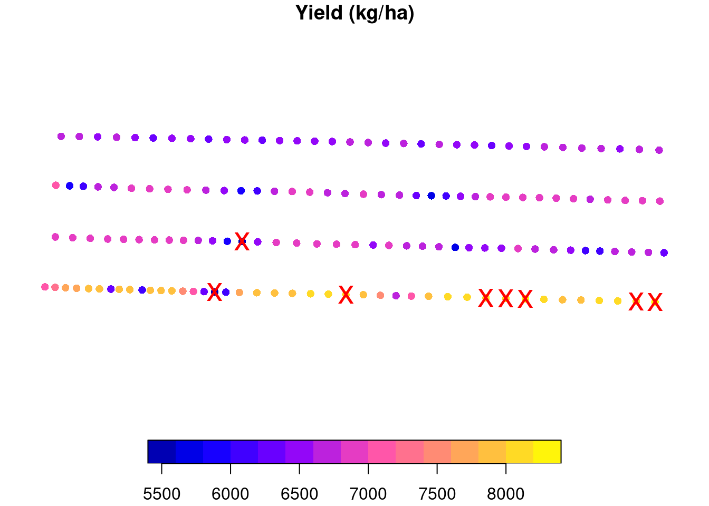
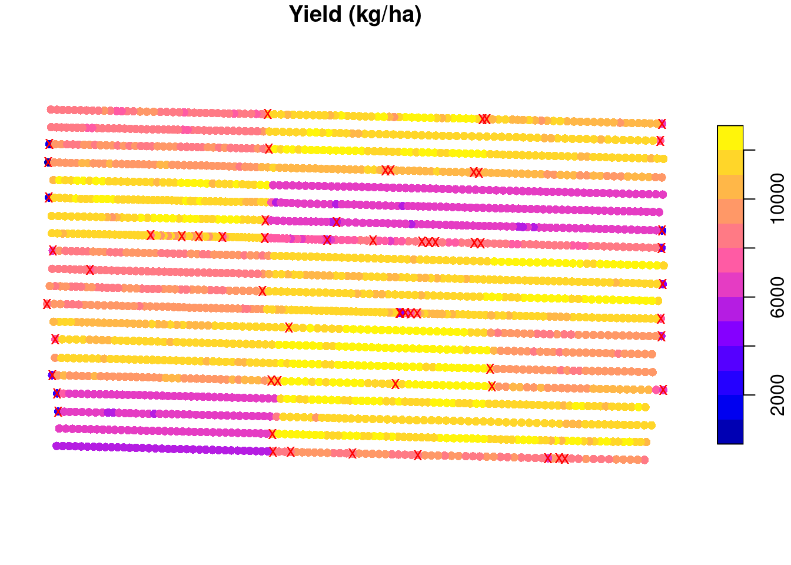
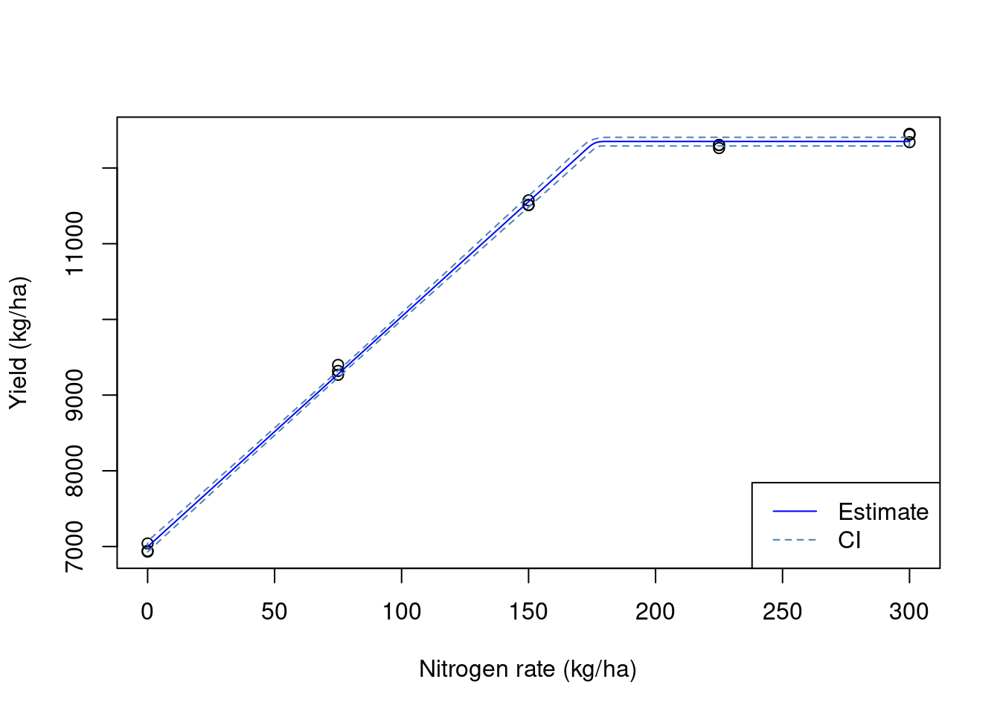
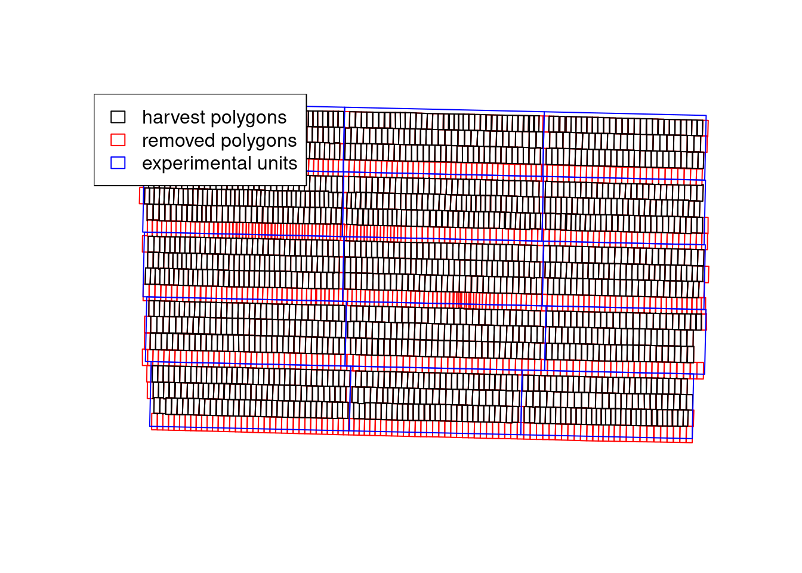

Introduction
In a previous post, I have mentioned that pacu provided support for processing data coming from on-farm trials, as well as production fields. In this post, I want to explore and showcase this functionality a little more in depth. The idea is to provide an example of processing these data and make a few considerations that can greatly impact the end result.
We will look at simulated data from a small on-farm trial. This is made up data and I simulated a relationship between corn yield and nitrogen rate that followed a linear plateau relationship like the image below. The simulated relationship presented an intercept = 7000, slope = 30, and a breakpoint = 180. Let’s process this data and see if we can recover this relationship. You can download the data here.
Working with the data
Loading the necessary packages
library(pacu)
library(sf)
library(nlraa)
library(nlme)Here, we will import the data sets into R. We will use two data sets for this exercise. The first contains made up raw yield data that represents data coming from an on-farm trial. The second contains an example of nitrogen rates applied to each experimental unit.
raw.yield <- read_sf('./raw-data/example-raw-data.shp',
quiet = TRUE)
trial.design <- read_sf('./raw-data/example-trial-design.shp',
quiet = TRUE)Lets take a look at how these two data sets line up in space. In this example, the points represent the yield monitor readings and the red rectangles represent the experimental units. We can see that, in this example, we had about 4 combine passes per experimental unit.
plot(st_geometry(raw.yield), pch = 1, cex = 0.3)
plot(st_geometry(trial.design), border = 'red', add = TRUE)Another piece of information that can be extracted from the trial.design data set is the amount of nitrogen applied to each experimental unit in this example.
plot(trial.design["nrate"], main = 'Nitrogen rate (kg/ha)')We can take a look at the raw yield data to see the kind of data we are dealing with. We can see that there is a lot of variability in the yield data, with it ranging from \(\approx 200\) to \(\approx 12000\) kg/ha. Some of this variability comes from the treatment effect but there’s a part of it that is just random variability. The challenge lies in identifying the treatment effect.
boxplot(raw.yield$yld_kgh,
ylab = 'Yield (kg/ha)')plot(raw.yield["yld_kgh"],
pch = 16,
main = 'Yield (kg/ha)',
breaks = 'quantile',
reset = FALSE)
plot(st_geometry(trial.design),
add = TRUE)Cleaning based on standard deviation
Something that is common to do, is to use empirical rules to remove outliers and clean some of the noise inherent to these type of data, let’s see the effect of that.
A pretty common procedure is to clean anything outside of 2 or 3 standard deviations from the mean (you can read more about it here). Let us take a look at this procedure. I will isolate one experimental unit for us to take a closer look. The removed points are marked with a red “X”. For this experimental unit, anything that was smaller tha 5622 or greater than 8139 kg/ha was removed.
## selecting only experimental unit 5
to.keep <- as.numeric(st_intersects(raw.yield, trial.design[5, ]))
one.eu <- raw.yield[!is.na(to.keep), 'yld_kgh']
## calculating the mean and sd
eu.mean <- mean(one.eu[['yld_kgh']])
eu.sd <- sd(one.eu[['yld_kgh']])
## defining upper and lower boundaries and identifying which
## data points to remove
upper.boundary <- eu.mean + 2 * eu.sd
lower.boundary <- eu.mean - 2 * eu.sd
to.remove <- (one.eu$yld_kgh < lower.boundary |
one.eu$yld_kgh > upper.boundary)
## showing which points were removed
plot(one.eu, reset = FALSE,
main = 'Yield (kg/ha)',
pch = 16)
plot(st_geometry(one.eu)[to.remove],
cex = 2,
col = 'red',
pch = 'x',
add = TRUE)
We can now apply this same methodology to all experimental units and see that, in total, we will remove 60 points from this data set.
raw.yield$eu <- as.numeric(st_intersects(raw.yield, trial.design))
raw.yield <- raw.yield[order(raw.yield$eu), ]
to.remove <- ave(raw.yield$yld_kgh,
raw.yield$eu,
FUN = function(x){
eu.mean <- mean(x)
eu.sd <- sd(x)
upper.boundary <- eu.mean + 2 * eu.sd
lower.boundary <- eu.mean - 2 * eu.sd
(x < lower.boundary | x > upper.boundary)
})
to.remove <- as.logical(to.remove)
plot(raw.yield['yld_kgh'],
main = 'Yield (kg/ha)',
reset = FALSE,
pch = 16)
plot(st_geometry(raw.yield)[to.remove],
col = 'red',
pch = 'x',
add = TRUE)
Now, let us remove these data points, and average the yield observations within each experimental unit. We can see that our estimates of the model parameters are not quite the same ones that we simulated. In addition, the variance of the parameter estimates is pretty large. This means that we are not very certain of these values.
yield.filtered.sd <- raw.yield[!to.remove, ]
mean.yield.sd <- aggregate(yield.filtered.sd['yld_kgh'],
trial.design,
FUN = mean)
mean.yield.sd <- st_join(mean.yield.sd, trial.design, join = st_equals)
fit1 <- nls(yld_kgh ~ SSlinp(nrate, a, b, xs),
data = mean.yield.sd)
# estimates
coef(fit1) a b xs
6814.09790 28.01518 168.74310 # variances
diag(vcov(fit1)) a b xs
28833.979455 3.075624 71.175162 ## Visualizing the data
preds <- data.frame(nrate = 0:300)
preds <- cbind(preds, predict_nls(fit1,
interval = 'conf',
newdata = preds))
plot(mean.yield.sd$nrate, mean.yield.sd$yld_kgh,
xlab = 'Nitrogen rate (kg/ha)',
ylab = 'Yield (kg/ha)')
polygon(x = c(preds$nrate, rev(preds$nrate)),
y = c(preds$Q2.5, rev(preds$Q97.5) ),
border = 'steelblue', lty = 2)
lines(preds$nrate, preds$Estimate,
col = 'blue')
legend('bottomright',
lty = 1:2,
legend = c('Estimate', 'CI'),
col = c('blue', 'steelblue'))
Adding a buffer to the experimental units
Another empirical cleaning method that is commonly used is to add a buffer to the experimental units. This in meant to remove some of the border effect or the transition between experimental units. However, adding a buffer needs to be done with caution. You want your buffer to be big enough to remove some of these potentially problematic observations, but you do not want your buffer to remove so many points that you will end up estimating the mean with few points. This would increase the uncertainty of your estimate. Let’s take a look at different buffer sizes:
buffers <- c(1, 2, 5, 10)
cols <- hcl.colors(4, palette = 'Temps')
plot(st_geometry(raw.yield), cex = 0.5)
for (i in 1:length(buffers)){
buffered.exp.units <- st_as_sf(st_buffer(trial.design, -buffers[i]))
plot(st_geometry(buffered.exp.units), border = cols[i], add = TRUE)
}
legend('topleft',
fill = cols,
legend = buffers,
title = 'Buffer size (m)')It seems that a buffer size of about 5 meters is what we want for this example. Let’s go with that and see which observations will be removed from the data set:
buffered.exp.units <- st_as_sf(st_buffer(trial.design, -5))
raw.yield$eu <- as.numeric(st_intersects(raw.yield, buffered.exp.units))
raw.yield <- raw.yield[order(raw.yield$eu), ]
to.remove <- ave(raw.yield$yld_kgh,
raw.yield$eu,
FUN = function(x){
eu.mean <- mean(x)
eu.sd <- sd(x)
upper.boundary <- eu.mean + 2 * eu.sd
lower.boundary <- eu.mean - 2 * eu.sd
(x < lower.boundary | x > upper.boundary)
})
to.remove <- as.logical(to.remove)
plot(raw.yield['yld_kgh'],
main = 'Yield (kg/ha)',
reset = FALSE,
pch = 16)
plot(st_geometry(raw.yield)[to.remove],
col = 'red',
pch = 'x',
add = TRUE)Now, let us remove these data points, and average the yield observations within each experimental unit. We can see that our estimates of the model parameters are a little closer to the true values but still not quite there. Also, the variance has decreased quite a bit but let’s see if we can increase the precision of our estimates!
yield.filtered.buffer <- raw.yield[!to.remove, ]
mean.yield.buffer <- aggregate(yield.filtered.buffer['yld_kgh'],
trial.design,
FUN = mean)
mean.yield.buffer <- st_join(mean.yield.buffer, trial.design, join = st_equals)
fit2 <- nls(yld_kgh ~ SSlinp(nrate, a, b, xs),
data = mean.yield.buffer)
## estimates
coef(fit2) a b xs
6659.5802 30.3704 172.9306 ## variances
diag(vcov(fit2)) a b xs
6649.190326 0.709247 14.583390 ## Visualizing the data
preds <- data.frame(nrate = 0:300)
preds <- cbind(preds, predict_nls(fit2,
interval = 'conf',
newdata = preds))
plot(mean.yield.buffer$nrate,
mean.yield.buffer$yld_kgh,
xlab = 'Nitrogen rate (kg/ha)',
ylab = 'Yield (kg/ha)')
polygon(x = c(preds$nrate, rev(preds$nrate)),
y = c(preds$Q2.5, rev(preds$Q97.5) ),
border = 'steelblue', lty = 2)
lines(preds$nrate, preds$Estimate,
col = 'blue')
legend('bottomright',
lty = 1:2,
legend = c('Estimate', 'CI'),
col = c('blue', 'steelblue'))
We get a little closer to the true value with every layer of processing that we include in this exercise. However, these layers are empirical and somewhat arbitrary. By adding a buffer zone, we are looking to remove points that have an influence from the adjacent experimental units. This can be done using the ritas algorithm within pacu.
Using pa_yield
The pa_yield function has built-in capabilities to automate these processes without the need for these empirical rules. For instance, by setting the argument remove.crossed.polygons to TRUE, we remove data that could be influenced by adjacent experimental units. You can read more about the ritas algorithm here.
So we can visualize these steps, I will set the option steps to TRUE. This is a new addition to the package and is not yet available on CRAN. Please install the package from GitHub to be able to use this.
yld3 <- pa_yield(raw.yield,
data.columns = c(mass = 'mass_g',
interval = 'intrvl_',
distance = 'dstnc_f',
width = 'swth_ft',
angle = 'angl_dg',
moisture = 'moistur'),
grid = trial.design,
steps = TRUE,
algorithm = 'ritas',
unit.system = 'metric',
verbose = FALSE,
remove.crossed.polygons = TRUE,
cores = 6)
yld4 <- st_join(yld3$yield, trial.design, join = st_equals)
yld4$yield_kgh <- yld4$yield * 1000 ## converting from t/ha
## to kg/ha
fit3 <- nls(yield_kgh ~ SSlinp(nrate, a, b, xs),
data = yld4)
## estimates
coef(fit3) a b xs
6997.17524 30.40087 176.09137 ## variances
diag(vcov(fit3)) a b xs
1401.4136937 0.1494841 3.1692490 ## Visualizing the data
preds <- data.frame(nrate = 0:300)
preds <- cbind(preds, predict_nls(fit3,
interval = 'conf',
newdata = preds))
plot(yld4$nrate,
yld4$yield_kgh,
xlab = 'Nitrogen rate (kg/ha)',
ylab = 'Yield (kg/ha)')
polygon(x = c(preds$nrate, rev(preds$nrate)),
y = c(preds$Q2.5, rev(preds$Q97.5) ),
border = 'steelblue', lty = 2)
lines(preds$nrate, preds$Estimate,
col = 'blue')
legend('bottomright',
lty = 1:2,
legend = c('Estimate', 'CI'),
col = c('blue', 'steelblue'))
We can see that the pa_yield() function was able to produce more precise estimates of the model parameters. In part, this is due to the ritas algorithm recreating the destructive harvest process and being able to track which harvest polygons have crossed between different experimental units. We can see that in the plot below that demonstrates which polygons were removed:
with(yld3$steps, {
plot(adjusted.polygons, border = 'red')
plot(cleaned.polygons, add = TRUE)
plot(grid, add = TRUE, border = 'blue')
legend('topleft',
fill = rep(NA, 3),
border = c('black', 'red', 'blue'),
legend = c('harvest polygons',
'removed polygons',
'experimental units'))
})
Conclusion
In this exercise, we have seen how different decisions about data processing can affect the estimates we get from the yield monitor data. We have also seen how we can use the pa_yield() function to process the yield data coming from agronomic trials. The differences in the precision of the estimates are really important when we want to estimate confidence intervals or investigate whether a certain covariate has an effect. For instance, let’s say that, in addition to nitrogen rates, we also had nitrogen source. More precise estimates would increase the power of our analysis to find differences.